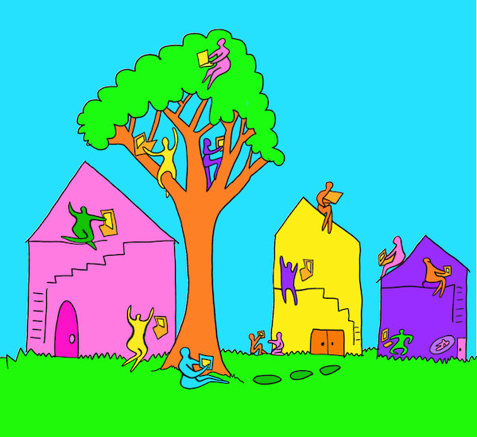
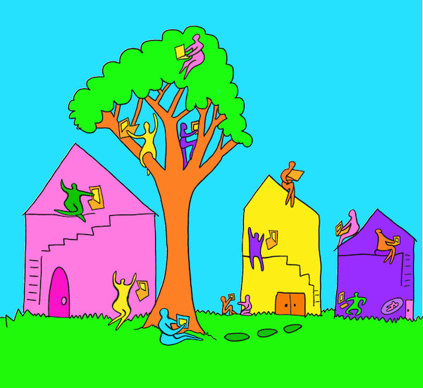

Online Hangs
Websites, tools, and platforms for connecting, co-creating, exploring
together online

Welcome!
Websites, tools, and platforms for connecting, co-creating, exploring together online
Welcome!
Here you'll find a sampling of tools for connecting online including delightful musical collaboration sites, collaborative drawing sites, online galleries, weird experiments, corporate video-meeting tools, and office tools repurposed as spaces for gathering together.
What these tools have in common
- Invite people to reach each other over the internet through typing, voice, video, drawing, music, or any expression that feels meaningful
- Priority to tools accessed for free through a browser
- Priority to the experimental, weird, home-made, simple, or barely working (anything with any interesting features is welcome)
Why Online Spaces?
I’ve always been curious about spaces for online connection. I mean, I’m infinitely curious about connection and online connection is no exception.
The first time I entered an online chatroom I was mystified by the stream of $trang3 u$3rnam3$ echoing an indecipherable question: a/s/l? Once I decoded the meaning, I was even more lost. The portals to the infinite are opening and this is the question we ask?
To me the curious glory of this thing is presence without shared embodiment, touching minds without seeing or being seen, co-existence in an imaginary space that we might co-create with our minds and machines and words.
The List
Exploring together
- LIKELIKE - An open-source MMORPG gallery
- (Defunct) WIZ MUD & re-build - Online wizard
hangout
- Hitchhiker - Malware for touring the
internet together
- Habbo/Habboon - Virtual world (*NYU Game
Center*)
- Decentraland - Blockchain Second Life
- (Defunct) The
Palace - Early Online World
Words
- bl a th er A world of words
- Midnight Pub Networked writing local pub
- tilde.town tilde.town A computer meant for sharing
- MUSHes - Multi-User Shared
Hallucinations
- Roguelike Celebration 2020 - A social
space for attendees
Random matching
- Neighbourbot - Meet people from
your server
- Mixaba -
Small groups and rooms that shuffle
- Chatroulette - Random video matching with
strangers
Drawing
- Draw.Chat - Shared whiteboard
- awwapp - Touch-friendly online whiteboard
- skribbl - Drawing & Guessing Game
- Drawesome - Social Drawing
- Piccles - Mural Drawing
Dance Parties
- Clubquarantine Dance party (*lineup
& CoC*)
- cLuв ɊυÃRaNTĮŇE
Queer Insta
dance party (*spotlight*)
Spatial Video
- Laptops in space - Video calls & you
are a
laptop in space
- Chudo Avatar virtual space
- Mozilla Hubs Customizable VR virtual space
- Yorb - ITP Virtual space
Minimal
- Throne Room - My virtual graffiti bathroom
- Talkomatic - 5 person early chat room
- Sidebar - Jump from video room to video room
- Frog Chorus - V’s frogland
Music
- Plink Playful collaboration
- Remote rituals - In-browser collaborative
instrument
Coding
- Glitch Code together! Remix!
- Open Processing Creative Code
Collecting
- Are.na Collecting & contextualizing
Playful online office tools
- Marie’s wonderful
spreadsheet party / google doc parties
- Collaborative google docs in general - also see Fan is A Tool-Using
Animal”
- Facebook Group RPGs
- Strangers on the Net Discord RPG
- Group collaborations on Google Slides
Sound proximity & RPG map hangs
- Spatial Chat Video & map
- MakeSpace Video & voice & more!
- Cozy Room - Voice & avatar
- Calla - Voice & map
- Rambly - 90s style voice & map
- High Fidelity - Voice & map
- Online Town and Gather - Video & map
- Here.fm - Video & map
- With - Video & tools
- Banger - Voice & map
- Topia - Sketchlike map & voice
- Common Garden - Voice & map & tools.
Corporate tools
- Icebreaker - Online events
- Minglr - networking
- Miro - Collaborative whiteboard
- Mural - Collaborative canvas // whiteboard
- More standard meeting tools on this
post on meeting tools
Mapping out video call rooms
Tools that require special hardware, apps, equipment or $$$
- House Party - Drop-in app with games
- Run the
world Events: talks, ama
(upvotes), panels, cocktail parties
- Rodeo drop-in voice app with
friends &
friends of friends
- The
Under - Oculus Game
- Endlesss/ - Collaborative music-making app
- Cocoon - Group relationship communication app
- Rec Room - Software for VR avatar hangs
- AF
- Concert in Minecraft
Security & Privacy
Curious about privacy and security? Read about it in this handy '*privacy not included' resource from the Mozilla Foundation.
What's next?
While making this list I hosted a series of online gatherings where we explored some of these tools, websites, and platforms together.
Since then I've been deeply thinking about the dimensions of these spaces. For example: is it a space for scheduled connection? Or spontaneous drop-in? Is it a space that flattens and dehumanizes? Or a space that humanizes and invites complexity? Is it a space of persistent identity? Or anonymity?
I'll write more about these dimensions soon.
Write me if you have spaces I should add to this list or if you have thoughts!
~
Looking for stability instead of experimentation? I listed, compared and reviewed the most popular standard tools for meeting online.